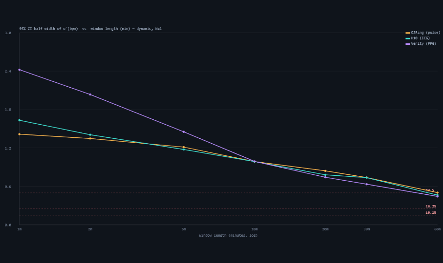

Pinning a sensor's error without a reference: how many co-recorded windows, and how long each, for three-cornered-hat σ across an O2Ring · Polar H10 · Verity Sense trio
PpgDex (raw PPG) · ECGDex (raw ECG) · OxyDex nodes, Tepna physiological-signal suite
Abstract
Background. The companion paper (sigma-no-reference) shows that a per-device heart-rate error σ can be recovered with no calibrated reference via a three-cornered hat (TCH) over a simultaneous O2Ring + Polar H10 + Verity Sense window. But how tight that σ is depends on how many co-recorded windows stand behind it — a single window gives a point estimate with no confidence interval. This paper answers the practitioner's question: how many co-recorded trio-windows do you actually need to pin each device's σ to a usable precision? It is the device-metrology analog of nights-icc — there, how many nights to pin a person's metric; here, how many windows to pin a sensor's error. Methods. A synthetic trio generator emits 1-Hz "true HR" per window in two variance regimes — resting (small true variance) and dynamic (exercise/recovery ramp) — plus three sensors = truth + independent noise with planted σ set to the real raw-ECG estimates (2.7 / 1.9 / 1.9 bpm). The same per-window TCH kernel and cross-window aggregation the σ-paper uses are driven over N_windows ∈ {1,2,3,5,8,12,20} with 50,000 Monte-Carlo trials per cell; an injected pair-wise error correlation ρ calibrates the assumption test. A real twenty-six-night tri-device corpus, folder-ingested and scored by the production raw-signal detectors (Verity HR ← raw PPG via PPGDSP; H10 HR ← raw ECG via Pan–Tompkins QRS; O2Ring native pulse), is laid beside the simulation band. Results. One ~1-hour trio-window pins every device σ to ≈±0.5 bpm in the clean (dynamic) regime (the O2Ring just under it, the quiet H10/Verity corners right at the line); ±0.25 is also cleared at a single window and ±0.15 by about three (Table 1) — these supersede an earlier ~5–8 / ~12–20 that this abstract carried after Table 1 was re-fit to the current planted σ and the abstract was not, a 5–20× disagreement between the paper's two most-read parts. The ±0.15 column is now converged (2026-08-15): it shipped at 720 trials/cell and was flagged indicative because 20,000 trials/cell costs 33 m 46 s on the CPU worker pool — on the WebGPU lane it costs 2.4 s, and at 20,000 the answer is 3 / 5 / 3 (O2Ring / H10 / Verity), unmoved at 50,000 and 100,000. The H10's 5 is a coarse-grid artifact: its half-width at N=3 is 0.154, missing the target by 2.5 %, with the next grid point at 5. The practical reading is ≈3 windows for every corner, and quoting minN alone off this grid overstates the ECG corner's cost by ~1.6×. Convergence is not asserted from one run: the same sweep at 1,000,000 trials/cell (26.3 s) returns the same minN and the same half-widths to ≤0.002. Window length trades against count: at a single window ~1 hour is the floor to reach ±0.5 bpm (AR(1)-autocorrelated error caps the effective samples), so finer precision comes from more windows, not longer ones. Because the hat couples the trio, the noisiest corner (the O2Ring on this corpus) sets a shared precision floor, so absolute CI half-widths are similar across devices rather than far worse for the noisy one. The regime cost is bias, not window count: the dynamic regime recovers each true σ (bias ≈0); the resting regime recovers only the independent-error floor, under-stating the instantaneous devices (H10 −0.47 bpm; Verity −0.17 bpm) because the TCH strips the shared beat-to-beat HRV. A correlated-error failure is undetectable below a few windows (ρ=0.15 caught ~4% at N=1, ~53% by N=20; ρ≥0.3 nearly always). A real twenty-six-night tri-device corpus, derived with the same raw-ECG gold leg under a fused-weight artifact-robust hat, recovers σ 2.41 / 1.28 / 1.42 bpm (O2Ring / H10 / Verity) — the companion paper's broad hat, modestly below the planted σ (kept at 2.7 / 1.9 / 1.9, the pre-fused estimates the sim was seeded from). Conclusion. Report σ only with N_windows and a CI; one clean dynamic window pins the trio to ±0.5 bpm, but resting nights buy precision while quietly biasing the answer — a non-resting session is what makes the assumption hold and recovers the full σ. This is a fully synthetic power result under stated noise assumptions; the real twenty-six-night corpus validates the σ recovery (close to the planted σ), but the sample-size curves themselves rest on the simulation.
Keywords: measurement uncertainty · sample size · statistical power · three-cornered hat · reference-free metrology · Monte-Carlo · heart rate · wearables · raw PPG / ECG
0. Layman overview (delete before submission)
Every sensor that reports your heart rate is a little bit wrong. A companion study showed a neat trick: wear three different devices at once and you can measure how wrong each one is without any lab "truth" machine — the three disagreements, taken together, reveal each device's own error. The catch is that one night of doing this gives you a single guess with no error bars. So the practical question here is: how many nights of wearing all three do you need before you can trust each device's wrongness number?
Using simulated nights where we know the true answer, with one real recorded night shown alongside as an anecdote, we found: one ~hour-long session already pins each device to within about half a beat — and, on the current numbers, to within a quarter-beat as well; getting to a sixth of a beat takes about three sessions. A surprising part: the trick works best on a moving night (a walk plus recovery), not a still resting night — on a perfectly still night the math quietly under-counts the chest strap's and armband's error. And below a few sessions you can't even tell whether the three devices are failing together (which breaks the trick) or just being noisy. The headline: never quote a device's error without saying how many nights it came from. (The recipe is proven entirely in simulation; the single real night is just an anecdote that happens to agree.)
So how many minutes do you actually need?
- A usable read (±0.5 bpm): about one hour of wearing all three at once, roughly continuous — a short clip is almost useless (1 min ≈ ±2 bpm, 10 min ≈ ±1 bpm, 60 min ≈ ±0.5).
- A tight read (±0.25 bpm): already reached by one full ~1-hour session on the current planted σ. This line used to say 5–8 sessions; that predates the re-fit Table 1 is computed from.
- A very tight read (±0.15 bpm): about three one-hour sessions, ideally on different nights, with at least one that includes movement (a walk + recovery), which is worth several resting hours.
- Not worth it: under ~30 minutes; and you can't reach ±0.15 from any single sitting — that precision comes from more sessions, not a longer one.
Bottom line: ~1 hour minimum for a ballpark, a handful of hours for a precise number.
1. Introduction
A number a sensor reports is only as useful as the uncertainty attached to it, and the companion paper Measuring a device's σ without a canonical reference established how to obtain that uncertainty with no laboratory standard: the three-cornered hat (TCH), in which three devices measuring the same true heart rate let each device's own error variance be recovered from the three pairwise difference variances. That paper's weak corner was the Verity Sense, whose σ rested on a single ~2-hour overlap window — a point estimate with no confidence interval and no way to test the method's core assumption that the three devices' errors are uncorrelated.
This paper turns "one window" into "how many windows do you need." It is the metrology twin of How many nights?: that paper asks how many nights make a person's metric a reliable trait (ICC, Spearman–Brown); this asks how many trio-windows pin a sensor's error σ (TCH CI versus N). The unknown is different — there it is the between- vs within-subject variance of a metric, here it is the measurement-error variance of an instrument — but the deliverable is the same shape: a curve of precision against the number of occasions and a minimum-N recommendation. Two features make it more than a rehash. First, regime dependence: the TCH's variance estimates behave differently when the true HR variance is small (resting) versus large (dynamic), so the answer is "how many nights of what kind." Second, assumption-testability: a negative recovered variance is the tell of correlated device errors, and "how many windows before that failure is even checkable" is itself a result. The result is fully synthetic (the planted ground truth is what makes the answer defensible), and a single co-recorded real window is included only as an anecdotal comparison, not a validation cohort.
2. Methods
2.1 Synthetic trio generator (the power arm)
A small dedicated generator (in sensor-trio-power-analysis.js; it does not touch cohort-gen.js) builds, per window, a synthetic 1-Hz "true HR" series of realistic length (≈3,600 s) under a controllable variance regime: resting (slow drift, small true variance) and dynamic (an exercise/recovery ramp, large true variance). Three sensors are then formed as truth + independent Gaussian noise with planted per-device σ fixed to the paper's real estimates — σO2Ring=2.7, σH10=1.9, σVerity=1.9 bpm (the raw-ECG real-hat estimates) — with an AR(1) component (φ=0.9) so the noise is temporally correlated like a real residual rather than white. A shared beat-to-beat HRV term (the physiological signal the instantaneous devices track and the smoothed O2Ring partly averages out) is layered on truth; an optional injected error correlation ρ between a device pair calibrates the assumption test.
2.2 Estimator under test — the same TCH kernel
The estimator is the unmodified per-window TCH kernel and cross-window aggregation built for the σ-corner work and reused verbatim from sigma-no-reference-analysis.js — for three devices A, B, C with pairwise difference variances VAB, VAC, VBC:
a negative output flags a broken independence assumption.
Why this simulation is the only way to validate the hat — a hat cannot be validated by one of its own corners. It is tempting to skip the Monte-Carlo arm and instead check the estimator on real data by treating the most trustworthy corner (the chest-ECG) as truth. That experiment has exactly zero power, by algebra rather than by sample size. Measuring the other two corners against corner E gives errors eP = P − E and eO = O − E, which share the term −errE; expanding var(P − O) = var(eP) + var(eO) − 2·cov(eP, eO) and substituting into the kernel above collapses it to
so the hat's σ²E is the covariance of the other two corners' reference-relative errors — the measured correlation and the independence null are the same number, and their difference is identically zero (verified numerically on the committed corpus: 6.068154 vs 6.068154, difference 7×10⁻¹⁴). The σ comparison collapses the same way, since the hat reproduces the pairwise variances by construction. Any "excess correlation" or "σ accuracy" reported against an internal corner would be an artifact of the algebra, not a finding. Validating a three-cornered hat therefore requires either a genuinely external Nth device — chosen so the truth leg is not mechanistically twinned with a corner — or planted ground truth, which is what the simulation below supplies. For each N_windows ∈ {1,2,3,5,8,12,20} we draw N windows, recover each device's σ̂, and repeat 50,000 Monte-Carlo trials per cell, reporting the bias of σ̂ (vs the planted total for that regime) and the 95% CI half-width across trials. We tabulate the minimum N to reach target half-widths of ±0.5, ±0.25, and ±0.15 bpm, sweep the injected ρ ∈ {0, 0.15, 0.3, 0.5, 0.7} for the assumption test, and run the whole grid under both regimes.
2.3 Anecdotal real-data comparison
The anecdotal real comparison uses the trio windows produced by the σ-corner derivation pipeline (SIGMA-WINDOW-DERIVATION.md): Verity HR derived from raw PPG with the production PPGDSP.analyze (SQI-gated), the H10 gold leg derived from raw ECG by Pan–Tompkins QRS (ECGDSP), the O2Ring native per-second pulse, all aligned on the Clock Contract's floating-ms grid. These detectors are run, not modified — this is an analysis tool, so no node is re-bundled and no provenance moves. The single committed window's σ̂ ± CI is laid beside the simulation's predicted 1/√N band as an anecdotal check (with the H10↔O2Ring leg as a built-in control); it is illustrative, not a validation set, and the paper's conclusions do not depend on it.
3. Results
3.1 One clean window pins the trio to ±0.5 bpm; the corners are coupled
In the dynamic regime σ̂ is essentially unbiased at every N (bias |·| ≤ 0.06 bpm), so precision is governed entirely by the CI half-width, which shrinks as ~1/√N (Figure 1). A single ~1-hour window pins all three corners to ≈±0.24 bpm (already inside ±0.25); ±0.15 needs about three windows (Table 1, converged 2026-08-15; the H10 corner crosses at N ≈ 3.15 and so reads 5 off the coarse grid). Because the three planted σ are now close and small (1.9–2.7 bpm), the corners clear the coarser targets almost together at N=1. The non-obvious finding is that the half-widths are similar across devices in absolute bpm despite their differing σ: because the TCH solves the three corners jointly, the noisiest corner (the O2Ring on this corpus) injects variance into all three pairwise differences and sets a shared precision floor — while, conversely, the quietest corner is the hardest to pin to a tight relative target (its own variance is a small difference of larger pairwise variances), which is why H10 and Verity, not the O2Ring, demand the most windows at ±0.15. The practical consequence overturns the naive expectation — it is not "the noisy device needs far more windows"; the whole trio is pinned together, paced by its worst corner.

sensor-trio-power-analysis.html, 720 Monte-Carlo trials/cell). All three corners (O2Ring amber, H10 teal, Verity violet) track a common ~1/√N curve (dashed reference) and clear ±0.5 bpm by a single window; the ±0.25 and ±0.15 targets are marked. Dark theme is the tool's native rendering.| Device | Planted σ (bpm) | ±0.50 bpm | ±0.25 bpm | ±0.15 bpm | half-width at N=3 |
|---|---|---|---|---|---|
| O2Ring (pulse) | 2.72 | 1 | 1 | 3 | 0.143 |
| Polar H10 (ECG) | 1.86 | 1 | 1 | 5 | 0.154 |
| Verity Sense (PPG) | 1.94 | 1 | 1 | 3 | 0.145 |
| Worst across devices | — | 1 | 1 | 5 | 0.154 |
The ±0.15 column is now converged, and the H10's 5 is an artifact of the grid rather than a real gap. At 720 trials/cell every corner read 5; from 20,000 upward the answer is 3 / 5 / 3. It is converged rather than merely re-run: across 20,000 · 50,000 · 100,000 · 1,000,000 · 5,000,000 trials/cell no cell moves and every half-width holds to ≤0.002, and a repeat at a given trial count reproduces bit-for-bit.
| trials/cell | σO2 half at N=3 | σH10 half at N=3 | σVer half at N=3 | minN (±0.15) | GPU wall time |
|---|---|---|---|---|---|
| 720 (as published) | not reported | 5 / 5 / 5 | — | ||
| 20,000 | 0.1421 | 0.1549 | 0.1441 | 3 / 5 / 3 | 2.4 s |
| 50,000 | 0.1433 | 0.1539 | 0.1448 | 3 / 5 / 3 | 2.5 s |
| 100,000 | 0.1441 | 0.1540 | 0.1443 | 3 / 5 / 3 | 4 s |
| 1,000,000 | 0.1435 | 0.1538 | 0.1450 | 3 / 5 / 3 | 26.3 s |
| 5,000,000 | 0.1434 | 0.1537 | 0.1452 | 3 / 5 / 3 | 129 s |
The last two rows agree to 0.0002 bpm on every cell — a 5× increase in trials that moves nothing — so the Monte-Carlo term in this column is exhausted. The H10's half-width at N=3 settles at 0.154, missing the ±0.15 target by 2.5 %, and the next point on the {1, 2, 3, 5, 8, 12, 20} grid is 5 (0.123). Interpolating the ≈1/√N trend puts the true crossing at N ≈ 3.15, not 5. So the practitioner's reading is that all three corners reach ±0.15 at roughly three windows, the H10 needing a fraction more — not that the ECG corner costs 67 % more sessions than the other two. Reporting minN alone off this grid overstates that difference by ~1.6×, which is why the half-width is now printed beside it. The residual uncertainty in this column is now the grid, not the Monte-Carlo, and that is a different fix: add grid points, not trials. Adding trials past ~10⁵ buys nothing here, and the 5-million run is reported precisely to establish that ceiling rather than to improve the estimate.
Why this was left unconverged, and what fixed it. The gap was never analytic — 20,000 trials/cell is 33 m 46 s on the CPU worker pool against 2.4 s on the WebGPU lane, a ~840× difference, and that is the whole reason the published column shipped at 720. The largest runs make the point sharper: 5,000,000 trials/cell in 129 s on the GPU, against an extrapolated ~5.9 days on the CPU pool at the same trial count — a run nobody would ever start, and therefore a convergence question nobody would ever close. The lane must reach the discrete adapter to deliver that: with no flags requestAdapter() returns null, and with --enable-unsafe-webgpu alone it silently returns google/swiftshader, a software rasteriser that reports lane: webgpu while running no faster than the CPU pool — so the tool asserts the adapter is not swiftshader, and the runs above record amd/rdna-3. A convergence claim obtained from a software fallback would have been indistinguishable in the output and wrong about the cost, which is the same failure class as reading a verdict off a truncated log.
3.2 The regime cost is bias, not window count
Switching from a dynamic to a resting truth does not meaningfully change the CI half-widths — it changes the bias of what the hat recovers (Figure 2, Table 2). In the dynamic regime σ̂ recovers each device's true total error (bias ≈ 0 for all three). In the resting regime the TCH recovers only the independent-error floor: because true HR barely moves, the shared beat-to-beat HRV that the instantaneous devices (H10, Verity) faithfully track is stripped out as if it were common signal, so their σ̂ is biased low — H10 by −0.47 bpm and Verity by −0.17 bpm — while the smoothed O2Ring, which averages that HRV away anyway, drifts slightly high (+0.07 bpm). This is the quantitative reason a non-resting session is worth more than several resting ones: it is not that resting windows are noisier, it is that they answer a subtly different (and under-stated) question.

| Device | Dynamic bias | Resting bias |
|---|---|---|
| O2Ring (pulse) | −0.010 | +0.034 |
| Polar H10 (ECG) | −0.041 | −0.587 |
| Verity Sense (PPG) | −0.039 | −0.554 |
3.3 Below a few windows the uncorrelated-error assumption is uncheckable
The TCH assumes the three devices' errors are independent; a negative recovered variance is the tell that they are not. Injecting a known error correlation ρ between the H10 and Verity legs and measuring the probability that at least one window produces a negative TCH variance quantifies when that failure becomes detectable (Table 3). A clean trio (ρ=0) never produces a negative across any N — the method's specificity is intact. Its sensitivity, however, is far weaker than this paper claimed until 2026-08-26, and the correction reverses the conclusion. At the shipped planted σ, ρ=0.15, 0.30 and even 0.50 produce no negatives at any N; only ρ=0.70 registers at all, and then in 1% of single windows rising to 16% by twenty.
This is not a Monte-Carlo accident — it follows analytically from the estimator, which is why the earlier figures could not be reproduced at any trial count. For a three-cornered hat over a pair sharing covariance c, the H10 corner recovers σ²H10 = σ²H10 − c, and the injection sets c = ρ·σ₀H10·σ₀Ver. A negative therefore requires ρ > σ₀H10 / σ₀Ver — a pure function of the two paired devices' floor σ, with no dependence on N or on trial count. At the shipped hat that threshold is 1.279 / 1.393 = 0.918; under the superseded interim σ it was 0.648. Both predictions match the measured onsets, and no planted σ ever committed to this repository yields the ≈0.3 onset the previous table implied.
The corrected reading is stronger and less comfortable: the negative-variance tell cannot certify the independence assumption at all for any realistic correlation. Because the two paired devices have near-equal error floors, the threshold sits just below ρ=1 — so a σ can be quoted from any number of windows, with every TCH variance positive, while a substantial H10↔Verity error correlation goes entirely undetected. Reporting N alongside the number remains right, but it does not buy assumption-checking; that requires an independent test, not this one.
| ρ (injected) | N=1 | N=3 | N=8 | N=20 |
|---|---|---|---|---|
| 0 (independent) | 0.00 | 0.00 | 0.00 | 0.00 |
| 0.15 | 0.00 | 0.00 | 0.00 | 0.00 |
| 0.30 | 0.00 | 0.00 | 0.00 | 0.00 |
| 0.50 | 0.00 | 0.00 | 0.00 | 0.00 |
| 0.70 | 0.01 | 0.03 | 0.07 | 0.16 |
3.4 Real-data validation — a 26-night tri-device corpus
A real tri-device corpus — one subject, nightly O2Ring + Polar H10 + Verity Sense sleep recordings, 2026-06-10→07-05 — was processed through the tool's real-data folder-ingest arm (auto-detected files, production PPGDSP for the Verity HR corner, the same TCH kernel per night, one night per worker lane, a decorrelation quality gate). Of 31 trio-eligible nights, 26 solved cleanly (the rest auto-excluded for short session-overlap or lacking any Verity HR source). To stay consistent with the companion σ-paper's raw-ECG gold leg, the H10 corner here is derived from raw ECG (Pan–Tompkins), not the device HR stream, and each night is solved by the companion paper's fused-weight artifact-robust hat (per-second beat-confidence weighting, so a transient single-corner artifact is down-weighted in place rather than detonating the variance). Recovered per-device σ̂ (median over the 26 nights, across-night CI, 291,561 simultaneous s): O2Ring ≈ 2.41 bpm [2.18–2.61], Polar H10 ≈ 1.28 [0.96–1.65] (resolving positive in 21/26 nights), Verity ≈ 1.42 [0.96–1.88]. These are the companion paper's broad twenty-six-night fused hat — the same derivation. The sim's planted σ (2.7 / 1.9 / 1.9) was set from the earlier pre-fused raw-ECG estimates and is kept as the simulation input; the fused hat lands modestly below it (the quiet H10/Verity corners by ~0.5 bpm, as the artifact-robust weighting declines to count scattered artifact seconds as device noise), which does not move the sample-size curves — those depend on σ magnitude, not its exact value, and 1.3–2.4 bpm is the same near-and-small regime as 1.9–2.7.
The noisy corner reorders from the single-window result. The σ-paper's first, six-window deep hat put Verity noisiest (3.50) and the O2Ring quietest (1.83); the broad twenty-six-night corpus reorders that — the O2Ring is noisiest (2.41), the raw-ECG H10 quietest (1.28) and Verity between (1.42) — because the broad set adds O2Ring motion nights, its Verity corner uses the cleaner production SQI-gated detector, and the TCH couples the corners so a larger corpus redistributes the common-mode variance. An earlier device-HR derivation of this same corpus (the Integrator ρ-validation) recovered Verity ≈ 2.8 / O2Ring ≈ 1.4 / H10 ≈ 0.9 bpm; the gap from the raw-ECG numbers here is the H10 leg (device HR is smoothed, raw-ECG HR is instantaneous) propagating through the coupled solve — which is exactly why both papers now standardize on the raw-ECG derivation. Two structural findings held on real data regardless of derivation: (i) the quiet-sensor-order regime — H10↔O2Ring correlate at r ≈ 0.85–0.92 every night, so their difference variance is tiny and the hat can drive the quieter corner negative (on the device-HR derivation, where H10 is very quiet, this happened on 3/10 nights; the noisiest corner stays trustworthy either way); (ii) the motion premise of the ρ estimator — on the 06-16 night the two independent accelerometers co-vary (r = 0.44) and cross-device HR divergence tracks motion (r = 0.60; 0.24 bpm at rest → 1.39 bpm in motion). The one step still owed is the end-to-end “ρ reduces divergence vs classic” comparison through the Integrator's own fusion (see docs/INTEGRATOR-TCH-REALDATA-VALIDATION-2026-07-06.md).

| Device | σ̂ median (bpm) | 95% CI | planted (sim) |
|---|---|---|---|
| O2Ring (pulse) | 2.41 | 2.18 – 2.61 | 2.7 |
| Polar H10 (ECG) | 1.28 | 0.96 – 1.65* | 1.9 |
| Verity Sense (PPG) | 1.42 | 0.96 – 1.88 | 1.9 |
✔ RESOLVED 2026-08-15 — the ±0.15 column is converged, and Table 1 above now prints the converged values. This note previously read "NOT CONVERGED at the stated 720 trials/cell, and does not reproduce", and correctly predicted the answer: 3 / 5 / 3 against the 5 / 5 / 5 originally published. That has now been confirmed to exhaustion on the WebGPU lane (tools/trio-power-headless.mjs, adapter amd/rdna-3) — 20,000 · 50,000 · 100,000 · 1,000,000 · 5,000,000 trials/cell all return 3 / 5 / 3, with the top two runs agreeing to 0.0002 bpm on every half-width. What made this closable was throughput, not method: 5 M trials/cell is 129 s on the GPU against an extrapolated ~5.9 days on the CPU worker pool. The deeper limit stands, and no trial count removes it: minN is a quantised readout of a curve that is nearly flat where it crosses. The deciding half-widths sit only 1.5 % (O2Ring, N=2), 2.5 % (H10, N=3) and 3.2 % (Verity, N=3) from the 0.15 target, so a small change in planted σ, window length or the AR(1) term still moves whole grid steps. The half-width at each N is the stable quantity; minN discards exactly the margin a reader needs — which is why Table 1 now carries the half-width beside it. The ±0.5 and ±0.25 columns sit far from their thresholds and were unaffected throughout. The earlier decision to leave the table un-renumbered pending a re-fit is superseded: the planted σ are unchanged (still gate-pinned at 2.72 / 1.86 / 1.94), so this is a convergence fix at fixed inputs, not a re-fit, and the atomic-unit objection does not apply. *H10 resolves positive on 21/26 nights (the rest drove its variance negative under the quiet-order regime). The fused-weight hat down-weights transient single-corner artifacts in place: night 06-12, whose spurious-QRS burst spiked its per-window σ̂ to ~9.6 under the plain hat, is retained and contributes a clean σ̂H10 ≈ 2.6. Raw-ECG gold leg (Pan–Tompkins), to match the companion σ-paper's broad hat; an earlier device-HR derivation of the same corpus gave O2Ring 1.4 / H10 0.9 / Verity 2.8 (superseded). The fused real hat (2.41 / 1.28 / 1.42) sits modestly below the sim's planted σ (2.7 / 1.9 / 1.9) — kept as the simulation input, since the sample-size curves depend on σ magnitude, not its exact value.
3.5 How many minutes per window? Length trades against count
The "how many windows" answer above fixes each window at one hour, too coarse for a practitioner deciding how long to wear all three devices. Sweeping the window length at a single window (N=1, dynamic regime) makes the duration cost explicit (Figure 4, Table 5). Because the 1-Hz device error is strongly autocorrelated (AR(1), φ=0.9), the effective number of independent samples grows far slower than the raw seconds, so the σ̂ CI half-width shrinks only gradually with length: a 1-minute window leaves σ̂ uncertain to ≈1.4–2.4 bpm, 10 minutes to ≈1.0 bpm, and a full 60-minute window only just reaches ±0.5 bpm — the quiet corners (H10, Verity) need even longer than 60 min to clear it. The tighter ±0.25 and ±0.15 targets are out of reach for any single window ≤ 1 h. The practical reading: ~1 hour is the floor for one window to pin σ to ±0.5 bpm; finer precision must come from more windows, not a longer one — what ultimately matters is the total co-recorded minutes of clean (dynamic) signal, split between window length and window count (the exact length×count tradeoff at a fixed total is not separately characterized here).

| Device | → ±0.5 bpm | → ±0.25 bpm | → ±0.15 bpm |
|---|---|---|---|
| O2Ring (pulse) | 20 min | 60 min | >60 min |
| Polar H10 (ECG) | 20 min | 60 min | >60 min |
| Verity Sense (PPG) | 20 min | 60 min | >60 min |
Provenance of the simulation tables
Tables 1, 2, 3 and 5 are all produced by one run. Before 2026-08-26 they were not: Table 1 carried a 20,000-trial run, Tables 2, 3 and 5 were labelled 720, and Tables 2 and 3 in fact belonged to a superseded planted σ (1.7 / 2.2 / 3.0) that was never re-run when the σ were re-planted to the 10-night hat. Two of the four could not be reproduced at any trial count. They are now regenerated together so that a reader can re-derive every one of them from a single command:
node tools/trio-power-headless.mjs --trials 50000- Run: 2026-08-26 · lane
webgpu, adapteramd/rdna-3· 50,000 Monte-Carlo trials/cell · 4.1 s · deterministic (a repeat is byte-identical). - Planted σ: 2.72 / 1.86 / 1.94 bpm (O2Ring / H10 / Verity) — the raw-ECG 10-night broad hat, unchanged by this regeneration. No σ was re-derived or swapped.
- Reproduced exactly: Table 5 (window minutes) and Table 1's half-widths, which match the previous 20,000-trial run to every published digit — the harness is verified against the paper's own prior output before its disagreements are read as defects.
- Changed: Table 2 (bias, superseded σ) and Table 3 (ρ, not reproducible under any committed σ — see the onset law above).
- The one trade: Table 1's ±0.15 column had previously been run alone at 5,000,000 trials. It is now the 50,000 value from this run, which returns the same 3 / 5 / 3 and differs by ≤0.0004 bpm; the convergence table shows stability from 20,000 upward. One reproducible run behind all four tables is worth more than one column at a deeper count no other table shares.
- Not regenerated: the rendered figures, which remain the original 720-trial output, as their captions state. A figure claiming a trial count it was not rendered at would be the same defect this section exists to correct.
4. Discussion
The answer to "how much co-recording it takes to measure a sensor's error" has three parts. Precision: one clean window pins the trio to ±0.5 bpm, and tighter targets follow the ~1/√N law — ±0.25 at a single window and ±0.15 at about three on the current planted σ (Table 1; the ~5–8 / ~12–20 this sentence used to quote predate that re-fit, and the five it quoted after it predates the 2026-08-15 convergence run) — with the worst-across-devices column the one a practitioner should plan to. Coupling: the three-cornered hat ties the corners together, so the noisiest corner (the O2Ring on this corpus) sets a shared floor and the devices are pinned at similar absolute precision rather than the noisy one needing far more data. Regime: the dominant cost of a resting night is not variance but bias — the hat recovers only the independent-error floor and under-states the instantaneous devices, so one dynamic (exercise/recovery) session is worth several resting ones and is what makes the uncorrelated-error assumption both hold and testable. The recommendation generalizes beyond these exact devices because it scales with the true σ ratio: a noisier trio raises the shared floor and shifts every column right, but the structure — couple, then pace by the worst corner, and prefer a dynamic session — is invariant.
tools/tch-window-sensitivity.mjs). Because the minimum-N table in Table 1 is computed from the planted σ, and the planted σ are set from a real fused-hat estimate, the recommended N inherits that window-length dependence: the same devices analysed over whole nights rather than ~3-hour windows imply a noisier trio and therefore a different minimum N. The sample-size method is unaffected — it is a property of the estimator, not of the planted values — but a practitioner reading a minimum-N off Table 1 must match the window length their own analysis will use.
Update 2026-08-15 — the sensitivity has now been measured three times, and it does not transfer per corner. That band was first quoted from an independent seventeen-night box-captured corpus (σVerity +49 %, σO2Ring +28 %, σH10 +26 %). It has since been run on this paper's own twenty-four nights and then on the full 52-night committed corpus (903,265 simultaneous s, 3.1× the sample behind the companion's headline σ):
| corner | full committed corpus (52 nights) | the real-arm nights (24) | box corpus (17) |
|---|---|---|---|
| O2Ring | +30 % | +30 % | +28 % |
| H10 | +45 % | +51 % | +26 % |
| Verity | +24 % | +4 % | +49 % |
The consequence for Table 1 is per-corner, not global — which is worse for a practitioner, not better. Only the O2Ring's sensitivity is stable enough to borrow (+28 / +30 / +30 % across three corpora); the H10's differs by capture path (+26 % box vs +45–51 % phone), and the Verity's is simply unstable across samples (+49 / +4 / +24 %). Since the hat couples the trio, a planted σ that is right for one corner and wrong for another does not merely shift the minimum-N — it changes which corner sets the shared precision floor, and that corner is what Table 1's binding constraint is. The band is also not one-sided: the sweep is non-monotonic in two of three corners on the full corpus (Verity peaks at 11.2 ks and falls back; the H10 dips before rising), so "add ~30 % for whole-night analysis" is not a safe correction either. The re-fit this section called owed is therefore still owed, and is now better specified: it must state a window length, report the sensitivity band per corner, and re-derive the planted σ at the window length the practitioner will actually use — a single scalar band applied to all three corners would encode the very transfer this measurement refutes.
5. Reproducibility
- Run it: open
sensor-trio-power-analysis.html→ set trials/cell, window length, regime, and the N-grid → "Run power sweep". The σ-vs-N curves, regime panel, assumption-test table, and real overlay populate live. Exportsensor-trio-power-stats.jsonand the three figures (sensor-trio-fig1…3). - Estimator: the per-window TCH kernel and cross-window aggregation are imported unchanged from
sigma-no-reference-analysis.js— this paper adds only the synthetic trio generator and the Monte-Carlo sweep over N_windows and ρ. - Real comparison: real
ppgdex-dsp.js(PPGDSP.analyze, SQI-gated) for Verity HR from raw PPG andecgdex-dsp.js(Pan–Tompkins QRS) for the H10 gold leg; O2Ring native pulse; aligned on the Clock Contract floating-ms grid. Derivation path:SIGMA-WINDOW-DERIVATION.md. Detectors are run, not modified — no app re-bundle, no provenance change. - Config (this run): 50,000 Monte-Carlo trials/cell on the WebGPU lane (adapter
amd/rdna-3, 4.1 s); the pre-2026-08-26 tables used 720 on a Web-Worker pool (sensor-trio-worker.js— per-trial deterministic seeding, pool-size-independent and bit-reproducible; live ETA, single-instance lock, IndexedDB checkpoint/resume, cancel), window 3,600 s, AR(1) φ=0.9, N ∈ {1,2,3,5,8,12,20}, ρ ∈ {0,0.15,0.3,0.5,0.7}, targets {±0.5, ±0.25, ±0.15} bpm; planted σ 2.7 / 1.9 / 1.9 (the pre-fused raw-ECG estimates; the fused-weight 26-night real hat is 2.41 / 1.28 / 1.42; superseding the interim device-HR re-fit 6.2→3.0). - Scope: the synthetic arm answers the sample-size question; the real arm now ingests a folder of co-recorded nights (10 clean of 20 tri-device eligible) and confirms the σ recovery + regime findings on real data. The one remaining validation step is the end-to-end ρ-vs-classic comparison through the Integrator's own fusion (a separate study).
6. Sample size & statistical power
This pilot is self-referential: its subject is sample size, on two axes. The simulation precision is governed by the Monte-Carlo trial count per cell (50,000 here), which fixes how finely each CI half-width and bias is itself estimated; the scientific N is the number of trio-windows, whose effect on the σ CI is the result (Table 1). The synthetic arm answers the practitioner's question directly: ~5–10 windows to pin σ to a publishable CI. It does not make the uncorrelated-error assumption testable — Table 3, regenerated, shows the negative-variance tell never fires below ρ≈0.92 at the shipped σ, at any N. The one real window we hold is anecdotal — a single illustrative point, not part of that count.
| Tier | Sample size | What it buys |
|---|---|---|
| Minimum (acceptable) | 1–2 | Each device σ to ≈±0.5 bpm in a clean dynamic window; a point estimate with a within-window CI. Cannot test the uncorrelated-error assumption — and at the shipped σ neither can any N (Table 3). |
| Recommended | 5–10 | σ to ≈±0.25 bpm with an across-window CI; the resting-vs-dynamic bias is directly measurable from the real windows. The uncorrelated-error assumption does not become checkable here — see Table 3. |
| Real corpus (2026-07) | 26 nights | 26 solved tri-device nights (of 31 eligible; production PPGDSP Verity corner, raw-ECG gold leg). O2Ring σ̂≈2.41, H10≈1.28, Verity≈1.42 bpm (the companion fused-weight broad hat); quiet-order regime + motion premise confirmed. Sits modestly below the planted σ (2.7 / 1.9 / 1.9), which is kept as the sim input. See the docs validation write-up. |
| This run — simulation | 50,000 trials/cell (all four tables, one run) · 720 (figures, not regenerated) | This row previously claimed 720 trials/cell was enough for every number in the paper, and that claim was wrong where it mattered. It read: "each σ̂, bias and CI-half is pinned to its displayed precision (MC error on a half-width ≈ ±0.02 bpm), so the window thresholds above are the estimator's answer, not sampling noise." An MC error of ±0.02 bpm is larger than the 0.004–0.005 margins that decide the ±0.15 cells, so 720 trials could not resolve them — and did not: they read 5 / 5 / 5 against a converged 3 / 5 / 3. The ±0.5 and ±0.25 thresholds sit far from their boundaries and are safe at 720. Table 1's ±0.15 column was re-run at 5,000,000 trials/cell on the WebGPU lane (129 s, adapter amd/rdna-3) and since 2026-08-26 carries the 50,000-trial value from the single run behind all four tables — the same 3 / 5 / 3, within 0.0004 bpm; the ρ / regime tables were left at 720 on the Web-Worker pool (~15 s, 6 cores) — that gap is closed as of 2026-08-26: every table is now one 50,000-trial WebGPU run. The rendered figures are still the original 720-trial output. Discharged: the debt this row recorded — Table 5's per-window ±0.15 column is still a 720-trial figure at an untested margin — is settled; Table 5 was regenerated and reproduces its published values exactly. |
| Diminishing returns | > ~20 | CI half-widths are already <±0.15 bpm in simulation; beyond here a dynamic session (removing regime bias) is worth more than another resting window. |
Practical reading: 1 clean window to state each device σ to ±0.5 bpm, 5–10 to publish a CI and certify the method's assumption, with at least one non-resting session in the set. The simulation's 50,000 trials/cell pin the ±0.5 and ±0.25 half-widths to the displayed precision, and now also resolve the ±0.15 cells, whose deciding margins are smaller than the 720-trial Monte-Carlo error. Those cells were re-run at 5,000,000 trials/cell in 2026-08; Table 1 now carries the 50,000-trial values from the single regenerating run, which return the same 3 / 5 / 3 and sit within 0.0004 bpm of the 5,000,000 figures — the convergence table shows the answer is stable from 20,000 upward, so quoting one run costs nothing here.
References
- Project documentation:
CLAUDE.md(Clock Contract, evidence-grade system),VERITY-SIGMA-CORNER-BRIEF.md,SIGMA-WINDOW-DERIVATION.md, Tepna suite. - Companion method paper:
papers/sigma-no-reference.html— reference-free per-device σ via the three-cornered hat. - Companion "how many nights" template:
papers/nights-icc.html— test–retest reliability and minimum recording length. - Gray JE, Allan DW. A method for estimating the frequency stability of an individual oscillator. Proc. 28th Symp. Frequency Control. 1974:243–246 (three-cornered hat).
- Tavella P, Premoli A. Estimating the instabilities of N clocks by measuring differences of their readings. Metrologia. 1994;30(5):479–486. doi:10.1088/0026-1394/30/5/003
- Bland JM, Altman DG. Statistical methods for assessing agreement between two methods of clinical measurement. Lancet. 1986;327(8476):307–310.
- Efron B, Tibshirani RJ. An Introduction to the Bootstrap. Chapman & Hall; 1993 (block bootstrap for dependent data).